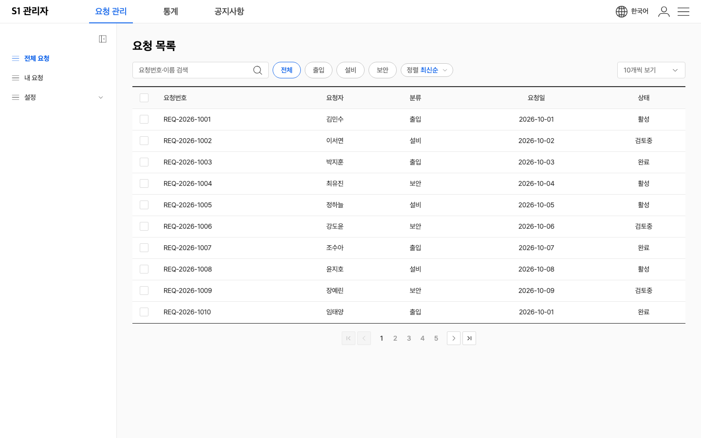
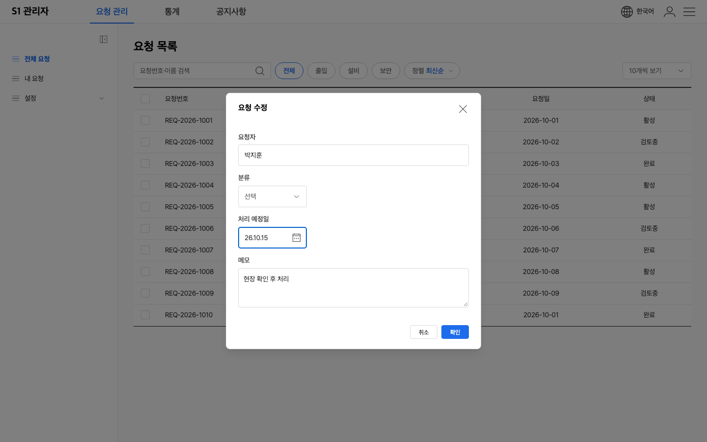
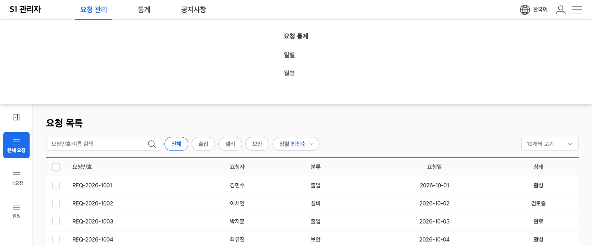
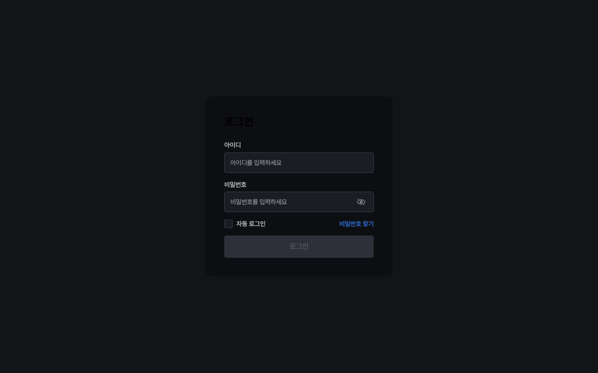
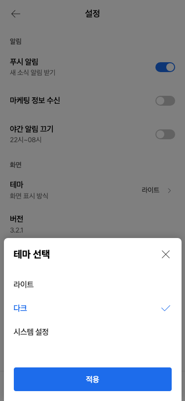

웹판(HTML·CSS·JS) 퍼블리셔 성적표
2026-10-12 · 배포본 0.19.0 · 두 가지로 검수했습니다 → ① 견본 46장을 하나씩 띄워 클릭·키보드까지 기계로 확인 ② 퍼블리셔 역할 에이전트가 받은 파일만 보고 화면 3개를 직접 만들어 봄
한 줄 판정
부품은 튼튼한데, 설명서와 '부품끼리 엮는 부분'이 약합니다. 견본을 그대로 붙이면 거의 다 돌아갑니다. 그런데 여러 부품을 섞어 실제 화면을 만들면 퍼블리셔가 스크립트 속을 뒤져야 하는 곳이 많습니다.
① 받자마자 고장 — 2건
설명서가 알려준 "최신인지 확인" 명령도 같이 멈춥니다. 도구가 웹 묶음에 없는 파일을 찾기 때문입니다.
설명서는 "브라우저로 열라"고 하는데, 그렇게 열면 아이콘 40개가 다 비고 동작도 안 붙습니다. 작은 서버를 띄워야만 정상으로 보입니다.
② 동작 결함 — 화면을 조합할 때 드러남
입력하던 내용이 날아갑니다. Esc는 맨 위 창 하나만 닫아야 합니다.
12쪽에서 '마지막'을 누르면 1~5만 남고 현재 쪽 표시가 사라집니다.
버튼에 속성 한 줄로 열고, 취소는 기본으로 닫히게 하면 됩니다.
시트 안 옵션 고르기, 하단 탭 이동, 칩 하나만 켜기를 퍼블리셔가 직접 짜야 했습니다. 시트 옵션은 키보드로 고를 수도 없습니다.
달력에 날짜를 미리 넣는 방법이 숨어 있고, 셀렉트는 값을 넣는 방법이 없습니다. 폼 전송용 이름표도 없습니다.
아래 그림 참고. 위에 겹쳐 뜨게 할지, 지금처럼 밀어낼지는 디자인 결정입니다.
140px 칸에서 520px 달력이 열립니다. 날짜는 '26.10.15'처럼 연도가 두 자리로 나옵니다. 크기와 표기는 디자인 정본에 정해진 값이라 바꾸려면 결정이 필요합니다.
③ 설명서 부족 — 가장 많이 걸린 곳
지금 설명서는 시작 5줄이 전부입니다. 아래는 모두 퍼블리셔가 파일 속을 뒤져서야 알아낸 것들입니다.
평소처럼 넣으면 오류가 나고 아무것도 동작하지 않습니다.
글꼴이 안 깔린 컴퓨터에서는 다른 글꼴로 보입니다. 부품 5종은 글꼴을 스스로 정하지도 않습니다.
속성 한 줄이면 되는데 그 한 줄이 설명서에 없습니다. 바탕과 기본 글자색을 잡아주는 기본 스타일도 없습니다.
크기·옵션·여닫기·이벤트가 설정 파일과 스크립트 속에만 있습니다. 견본 주석이 가리키는 설명도 실제로는 없습니다.
실제로는 잘 되는데 안내가 없습니다.
"22종"이라고 적혔는데 실제는 32종입니다. 모바일 파일 이름 규칙도 지켜지지 않았습니다. 스타일 파일에는 사람 이름이 든 작업 메모가 125곳 실려 나갑니다.
④ 일관성 — 고치면 기존 화면이 바뀜
통일하면 외울 것이 줄어듭니다. 다만 이미 쓰는 곳이 있으면 그 화면을 고쳐야 합니다. 옛 이름도 당분간 같이 받게 만들 수 있습니다.
검색창 xsm·칩 md·필터칩 md가 모두 34px이라, 한 줄에 놓으면 높이를 따로 맞춰야 합니다. 높이는 정본 값이라 이름 체계를 손볼지 정해야 합니다.
페이지 번호 2.7:1, 데이터 태그 3.4:1입니다. 권장 기준은 4.5:1입니다. 색 정본을 바꾸는 일입니다.
퍼블리셔가 만든 화면





잘 된 점
- 견본을 붙이고 한 줄만 부르면 거의 다 바로 동작합니다.
- 모양 완성도가 높습니다.
- 다크 모드가 속성 한 줄로 부품 전체에 깔끔하게 적용됩니다.
- 모달 초점 가두기, 배경 스크롤 막기 같은 까다로운 동작이 이미 들어 있습니다.
아직 못 믿는 부분
이 맥에는 Pretendard가 깔려 있어서 글꼴 문제는 화면으로 직접 확인하지 못했습니다. 파일 속을 읽어서 판단했습니다. 모바일 시간 휠은 굴리지 않고 눌러서만 시험했습니다.